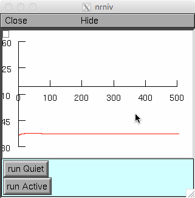
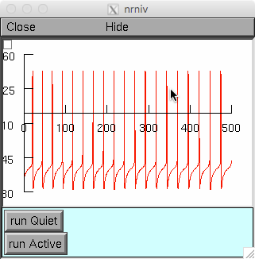

Model files from the paper: Ceballos CC, Li S, Roque AC, Tzounopoulos T and Leao RM(2016) Ih equalizes membrane input resistance in a heterogeneous population of fusiform neurons in the dorsal cochlear nucleus. Front. Cell. Neurosci. 10:249. doi: 10.3389/fncel.2016.00249 The paper proposed that Ih expression covaries specifically with IKir in order to maintain membrane resistance constant, but Ih variations are not relevant for creating the quiet and active phenotypes.This was tested varying the maximal conductance of gKIR and gh in the neuron model. Under unix systems: =================== to compile the mod files use the command nrnivmodl and run the simulation hoc file with the command nrngui init.hoc Under Windows: ============== to compile the mod files use the "mknrndll DOS box" and follow on-screen instructions. A double click on the simulation file init.hoc will open the simulation window. This fusiform model can be used to run a simulation of the spontaneous firing of a fusiform cell. To run a simulation of a quiet fusiform cell, the gKIR value is changed to gkirbar_fuscurr = 0.001 which should produce a graph like  To run a simulation of an active fusiform cell, the gKIR value is changed to gkirbar_fuscurr = 0.0005 which should produce a graph like 